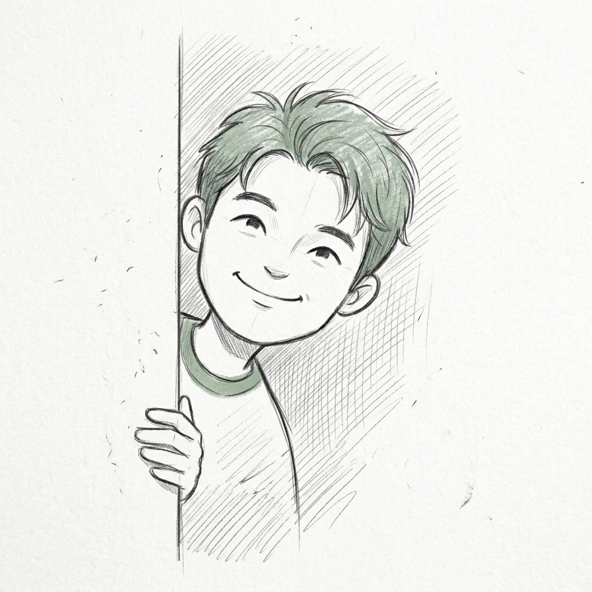

Hi, I'm Kong.
DevOps Engineer building reliable infrastructure and seamless developer experiences — making engineering workflows effortless and dependable.
The Mission
For me, the goal is always to build infrastructure that is fundamentally reliable and trustworthy. I want to create a solid foundation that never gets in the way, so developers can focus on what they do best: writing code.
My focus is on creating resilient, scalable systems using Kubernetes, Terraform, and AWS. I’m obsessed with the how—how we can make deployments safer, monitoring more intuitive, and the entire development lifecycle more reliable.
While my background includes a chapter as a technical artist in the games industry, that's actually where I learned to think in systems and untangle messy pipelines. Today, I bring that same problem-solving energy to DevOps—building solid infrastructure and making day-to-day work a lot smoother for development teams.
Beyond the Screen
-
Film Enthusiast
Always down to watch a great film and appreciate the art of visual storytelling.
-
Creative Hobbies
Drawing, chess, and making 3D assets for the indie game developer market.
-
Foodie Adventures
On a never-ending quest to discover the best local eats and hidden culinary gems.
The Philosophy
How I approach infrastructure and developer empowerment.
Reliable Foundations
Infrastructure should be boring—stable, predictable, and resilient. I build systems that stand the test of time using industry-standard tools like Kubernetes and Terraform.
Developer-First DX
DevOps isn't just about YAML; it's about people. I focus on Developer Experience to ensure that CI/CD pipelines and internal tools are friction-less, empowering, and easy to use.
Practical Automation
I focus on automating the things that actually matter. Instead of adding complexity for its own sake, I look for straightforward, sensible ways to eliminate repetitive tasks and speed up delivery.